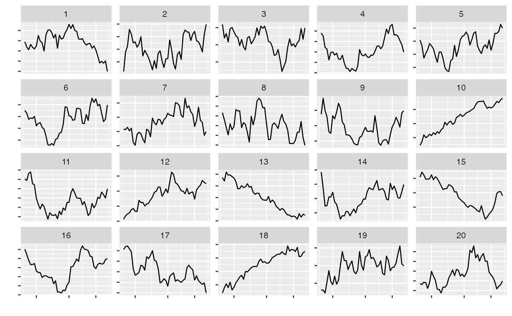

Null hypothesis: data follows a time series model using auto.arima from the forecast package
null_ts(var, modelfn)variable to model as a time series
method for simulating from ts model.
null_model
require(forecast)
#> Loading required package: forecast
#> Registered S3 method overwritten by 'quantmod':
#> method from
#> as.zoo.data.frame zoo
#> Registered S3 methods overwritten by 'forecast':
#> method from
#> autoplot.Arima ggfortify
#> autoplot.acf ggfortify
#> autoplot.ar ggfortify
#> autoplot.bats ggfortify
#> autoplot.decomposed.ts ggfortify
#> autoplot.ets ggfortify
#> autoplot.forecast ggfortify
#> autoplot.stl ggfortify
#> autoplot.ts ggfortify
#> fitted.ar ggfortify
#> fortify.ts ggfortify
#> residuals.ar ggfortify
require(ggplot2)
require(dplyr)
data(aud)
l <- lineup(null_ts("rate", auto.arima), aud)
#> decrypt("uIpx oTHT ya NJ3yHyJa Bw")
ggplot(l, aes(x=date, y=rate)) + geom_line() +
facet_wrap(~.sample, scales="free_y") +
theme(axis.text = element_blank()) +
xlab("") + ylab("")

l_dif <- l %>%
group_by(.sample) %>%
mutate(d=c(NA,diff(rate))) %>%
ggplot(aes(x=d)) + geom_density() +
facet_wrap(~.sample)